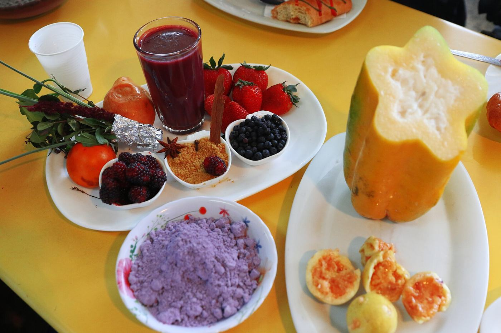
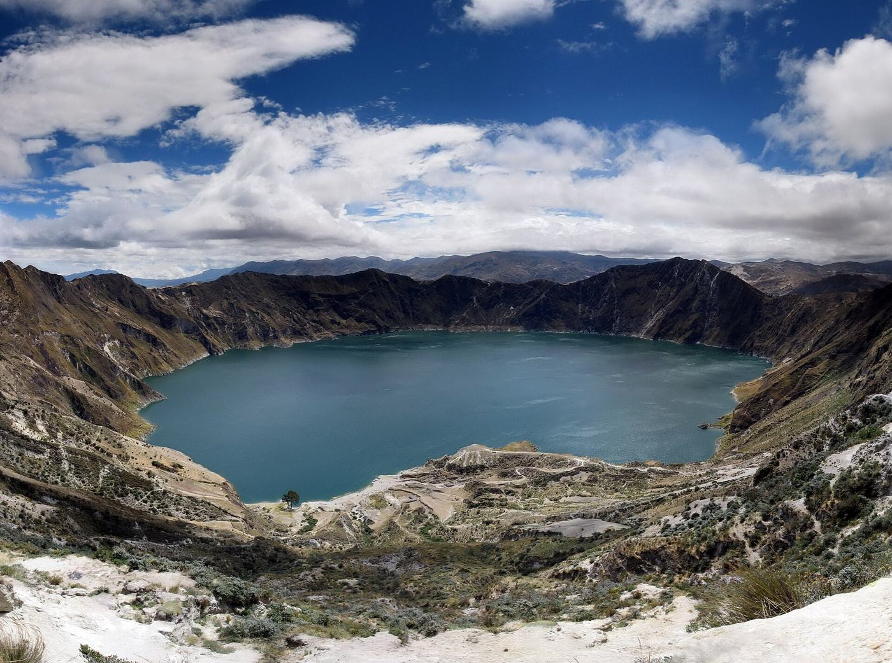
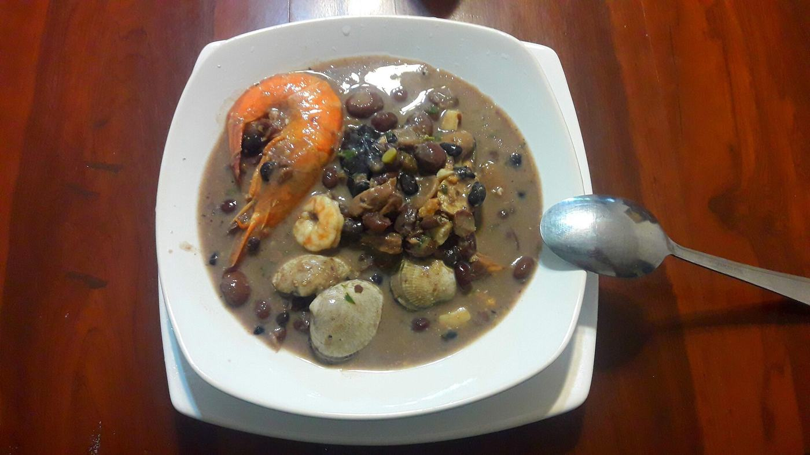
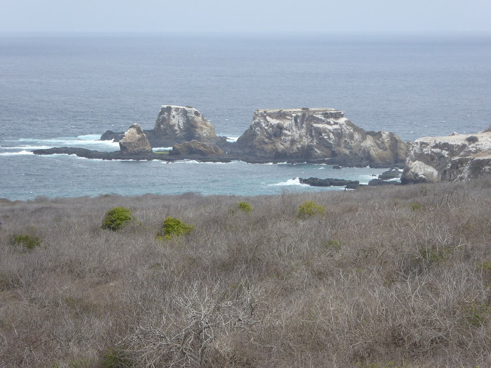
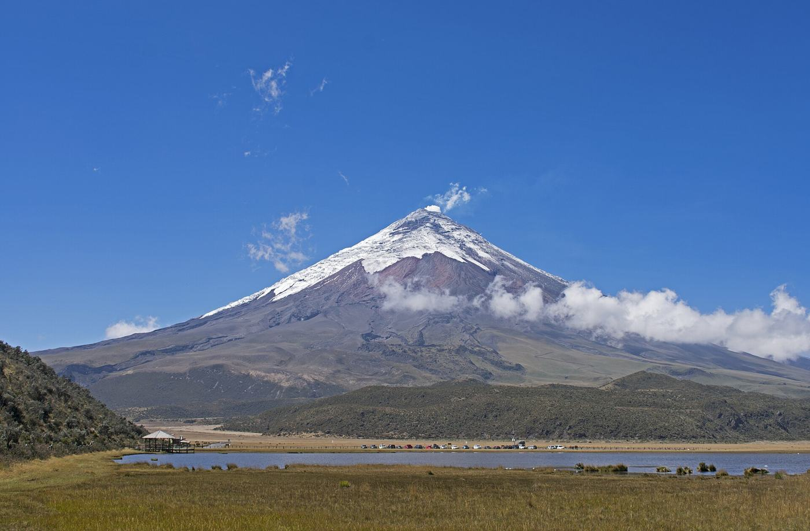
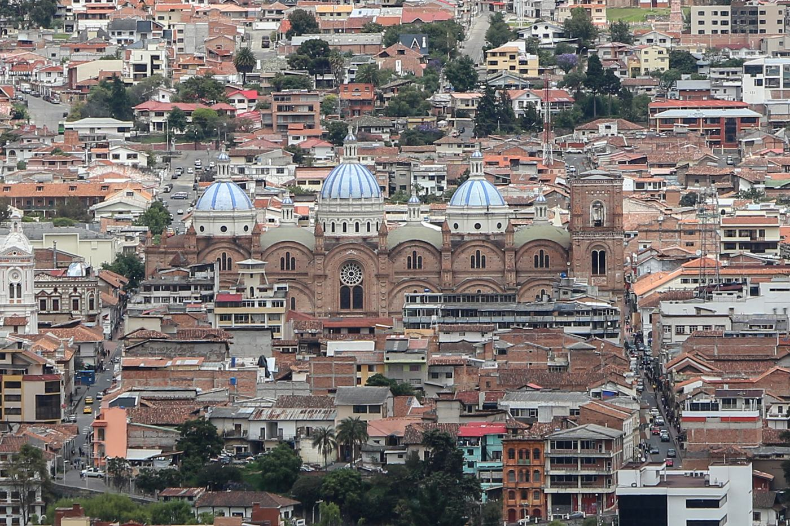

FEBRERO · Las fechas cambian cada año
Carnaval
En todo el país, sobre todo en GuarandaGlobos de agua, espuma y música durante los dos días antes de Cuaresma. Prepárate para mojarte. A los niños les encanta.
Las celebraciones y temporadas que nos morimos por vivir con Mateo, mes a mes.

Globos de agua, espuma y música durante los dos días antes de Cuaresma. Prepárate para mojarte. A los niños les encanta.

Desfiles de carros alegóricos cubiertos de flores y frutas, en las fechas de Carnaval.

Semana Santa. Las familias preparan fanesca, y la procesión del Viernes Santo llena el Centro Histórico de Quito.

La fiesta andina del sol en torno al solsticio de junio, con música y baile en las calles.

Las ballenas jorobadas llegan a reproducirse frente a la costa. No es una fiesta, pero es un momento estelar para la familia.

Celebraciones por la fundación de la ciudad, con conciertos y eventos a lo largo del Malecón.

Un feriado nacional que recuerda el primer grito de independencia de Ecuador en 1809.

Una de las fiestas más coloridas de Ecuador, con bailarines disfrazados y una famosa procesión.
Un feriado nacional que celebra la independencia de la ciudad en 1820.
Las familias recuerdan a sus seres queridos, toman colada morada y comparten guaguas de pan.

Al día siguiente del Día de los Difuntos, Cuenca celebra con desfiles y ferias.
Una semana de música, desfiles y fiestas de barrio por la fundación de la ciudad.
Una de las procesiones de Nochebuena más grandes de América Latina, llena de niños disfrazados.

A la medianoche del 31 de diciembre, las familias queman monigotes de tamaño real del año viejo.
Algunas fiestas cambian de fecha cada año, y las fechas locales pueden variar. Consulta con el pueblo antes de planear un viaje en torno a una.
Un email cada vez que se publica un nuevo capítulo de la mudanza. Historias reales de nuestra familia, en inglés y en español. ¿Eres nuevo aquí? Llévate gratis nuestra lista para mudarse con un bebé.